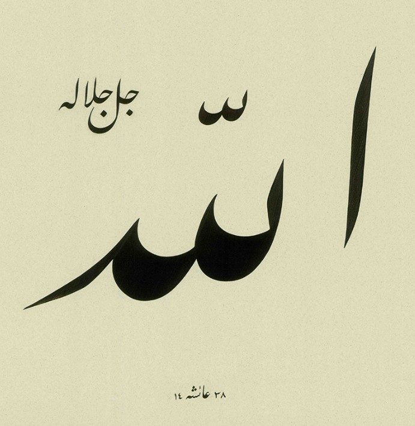

Kuran-ı Kerim'de en sık geçen kelime açık ara ile Lafza-i Celâl, yani Allah kelimesidir. Bu kelimenin kullanıldığı deyimler ve Türkçe anlamları aşağıdaki tabloda görülebilir. Deyimlere tıklayınca ilgili örnek ayet gösterilir.

Dersler ◀